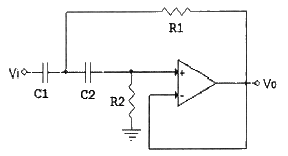
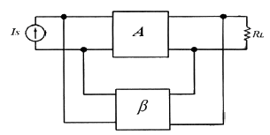
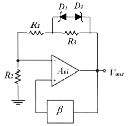
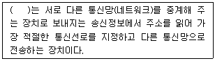
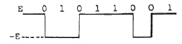
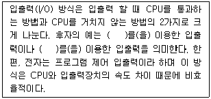
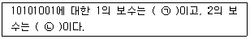
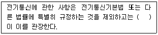

정보통신산업기사 (2015-03-07 기출문제)
1과목: 디지털전자회로
1. 맥동률이 2.5[%]인 정류회로의 부하 양단 평균 직류전압이 220[V]일 경우 직류전압에 포함된 교류전압은 몇 [V]인가?
- 2.2[V]
- 3.3[V]
- 4.4[V]
- 5.5[V]
(정답률: 72%)

2. 정류기의 평활회로에 사용되는 필터(Filter)로 적합한 것은?
- 대역필터
- 대역소자
- 고역필터
- 저역필터
(정답률: 78%)
3. 다음 중 효율이 가장 높은 증폭 방식은?
- A급
- B급
- AB급
- C급
(정답률: 86%)
4. 다음 그림과 같은 회로는 어떤 필터(Filter) 역할을 하는가?

- HPF(High Pass Filter)
- LPF(Low Pass Filter)
- BPF(Band Pass Filter)
- BRF(Band Reject Filter)
(정답률: 70%)
5. 다음 그림은 부궤환 연결방식 중 어떤 방식인가?

- 전류-직렬
- 전압-직렬
- 전류-병렬
- 전압-병렬
(정답률: 70%)
6. 3단 종속 전압 증폭기에서 이득이 각각 4배, 5배, 5배일 때 종합이득을 [dB]로 나타내면 얼마인가?
- 10[dB]
- 20[dB]
- 30[dB]
- 40[dB]
(정답률: 71%)
7. 다음 그림과 같은 윈 브리지 발진기에서 제너 다이오드의 역할을 무엇인가?

- 발진기의 출력전압을 제어하기 위한 것이다.
- 발진기의 자기 시동을 위한 장치이다.
- 폐루프 이득이 1이 되도록 한다.
- 궤환신호의 위상이 입력위상과 동상이 되도록 한다.
(정답률: 57%)
8. 다음 중 발진기와 관련이 없는 것은?
- 부궤환
- 정궤환
- 수정편
- VCO
(정답률: 70%)
9. 다음 중 누화, 잡음 및 왜곡 등에 강하고 전송 특성의 질이 저하된 전송로에도 사용가능한 다중 전송방식은?
- AM 주파수분할 다중 전송방식
- FM 주파수분할 다중 전송방식
- PM 주파수분할 다중 전송방식
- PCM 시분할 다중 전송방식
(정답률: 82%)
10. 다음 중 아날로그 변조 방식의 진폭변조(AM)에 대해 맞게 설명한 것은?
- 아날로그 정보 신호에 따라 반송파 신호의 진폭을 변화시키는 방식
- 반송파 신호에 따라 아날로그 정보 신호의 진폭을 변화시키는 방식
- 아날로그 정보 신호에 따라 반송파의 진폭과 위상을 변화시키는 방식
- 반송파 신호에 따라 아날로그 정보 신호의 위상을 변화시키는 방식
(정답률: 73%)
11. 듀티 사이클(Duty Cycle)이 0.1이고 주기가 30[ms]인 펄스의 폭은 얼마인가?
- 0.3[ms]
- 1[ms]
- 3[ms]
- 10[ms]
(정답률: 86%)
12. 다음 중 클리퍼(Clipper) 회로에 대한 설명으로 옳은 것은?
- 입력 파형을 주어진 기준전압 레벨 이상 또는 이하로 잘라내는 회로
- 일정한 레벨 내에서 신호를 고정시키는 회로
- 특정 시각에 발진 동작을 시키는 회로
- 안정 상태와 준안정 상태를 번갈아 동작하는 회로
(정답률: 90%)
13. 부울 대수의 정리 중 틀린 것은?
- A + A = A
- A · A = A
- (A · B) = (A + B)
- A + B = B + A
(정답률: 83%)
14. 다음 중 순서 논리 회로에 대한 설명으로 틀린 것은?
- 입력 신호와 순서 논리 회로의 현재 출력상태에 따라 다음 출력이 결정된다.
- 조합 논리 회로는 사용할 수 없다.
- 순서 논리 회로의 예로 카운터 레지스터 등이 있다.
- 데이터의 저장 장소로 이용 가능하다.
(정답률: 76%)
15. 8진수 666.6을 10진수로 변환한 값은 얼마인가?
- 430.75
- 434.75
- 438.75
- 442.75
(정답률: 72%)
16. 2진코드를 그레이코드(Gray Code)로 변환하여 주는 논리식으로 맞는 것은?
- OR
- NOR
- XOR
- XNOR
(정답률: 81%)
17. 5비트 리플 카운터(Ripple Counter)의 입력에 4[MHz]의 구형파를 인가할 때, 최종단 플립플롭의 주파수는?
- 125[kHz]
- 250[kHz]
- 500[kHz]
- 800[kHz]
(정답률: 62%)
18. 다음 중 M×N 디코더(Decoder)에 대한 설명으로 틀린 것은?
- AND 회로의 집합으로 구성할 수 있다.
- 2진수를 10진수로 변환하는 회로이다.
- 10진수를 BCD로 표현할 때 사용한다.
- 명령 해독이나 번지를 해독할 때 사용한다.
(정답률: 75%)
19. 다음 중 전원이 차단되었을 때 데이터가 지워지는 소자는?
- EPROM(Erasable Programmable Read Only Memory)
- EEPROM(Electrically Erasable Programmable Read Only Memory)
- NVRAM(Non-volatile Random Access Memory)
- SDRAM(Synchronous Dynamic Random Access Memory)
(정답률: 75%)
20. 여러 개의 입력선 중에서 하나를 선택하여 출력선에 연결하는 조합 논리회로를 무엇이라고 하는가?
- 멀티플렉서(Multiplexer)
- 인코더(Encoder)
- 디코더(Decoder)
- 채널(Channel)
(정답률: 89%)
2과목: 정보통신기기
21. 다음 중 정보단말기의 기능이 아닌 것은?
- 입ㆍ출력 변환 기능
- 입ㆍ출력 제어 기능
- 에러 제어 기능
- 신호 변환 기능
(정답률: 73%)
22. 정보 단말기 중 회선 접속부의 기능이 아닌 것은?
- 병렬 Data를 직렬로 변환 기능
- 2진 비트열로 변환 기능
- 직렬 Data를 병렬로 변환 기능
- 전송제어문자나 부호의 식별 기능
(정답률: 79%)
23. 데이터 전송 시에 발생하는 에러의 검출, 정정 등을 담당하는 장치는?
- 전송 제어 장치
- 회선 제어 장치
- 신호 제어 장치
- 중앙 처리 장치
(정답률: 80%)
24. 다음 중 비동기 전송방식인 ATM에 대한 설명으로 틀린 것은?
- 다양한 종류의 트래픽을 통합할 수 있다.
- 가변길이의 셀을 교환한다.
- 통계적 다중화방식(STDM)에 의한 효율적인 대역폭의 사용이 가능하다.
- 셀은 5바이트의 헤더와 48바이트의 페이로드로 구성된다.
(정답률: 73%)
25. 두 개의 랜을 연결하여 확장된 랜을 구성하는데 사용되며 ISO 7 layer의 2계층에서 이용되는 장비는?
- 허브
- 리피터
- 라우터
- 브리지
(정답률: 82%)
26. 비트 단위의 다중화에 사용되고, 시간 슬롯이 낭비되는 경우가 많이 발생하는 다중화는?
- 시분할 다중화
- 주파수 분할 다중화
- 비동기식 시분할 다중화
- 코드 분할 다중화
(정답률: 66%)
27. 네트워크 기기에 대한 설명이다. 괄호 안에 들어갈 알맞은 네트워크 장비는 어느 것인가?

- Bridge
- Router
- Repeater
- Switch
(정답률: 85%)
28. DSU(Digital Service Unit)에 대한 설명으로 틀린 것은?
- 선로에 한쪽 극성의 전압이 실리도록 하여야 한다.
- 동기유지를 위해 클럭 추출회로가 있다.
- 단극성 신호를 변형된 양극성 신호로 바꾸어 송신한다.
- 디지털 전송로에 사용한다.
(정답률: 73%)
29. 다음 중 동기식 변복조기에서 주로 사용되는 변조 방식은?
- 진폭 편이 변조(ASK)
- 주파수 편이 변조(FSK)
- 위상 편이 변조(PSK)
- 위상 변조(PM)
(정답률: 62%)
30. 문서 팩시밀리의 종류 중 G4 등급의 특징을 설명한 것으로 잘못된 것은?
- 디지털 신호방식 및 디지털 전용망을 사용
- A4 원고를 3~5초 내에 전송 가능
- 디지털 신호방식으로 MH, MR 부호화 방식으로 압축
- 고능률 부호화 방식(MMR)을 적용하여 공중 데이터망을 이용
(정답률: 85%)
31. 국내에서 개발된 최초의 전전자교환기는?
- No.1A
- TDX-1
- M10CN
- S1240
(정답률: 83%)
32. 다음 영상통신기기 중 카메라에 사용되는 센서로 노출된 이미지를 전기적인 형태로 바꾸어 전송 또는 저장하는 역할을 담당하는 것은?
- SSD
- CCD
- MHS
- ROM
(정답률: 77%)
33. 다음 중 CATV 방송의 특징으로 옳지 않은 것은?
- 전송로로 동축케이블, 광케이블을 사용한다.
- 불특정 다수에게 방송을 전송한다.
- 전송망사업자(NO), 방송국운영자(SO), 프로그램공급자(PP) 3개 분야가 있다.
- 케이블 모뎀(Cable Modem)을 이용하여 양방향 통신이 가능하다.
(정답률: 77%)
34. 이동통신용 단말기의 사용 파장이 0.1[m]라면 주파수는 얼마인가?
- 3[MHz]
- 3[GHz]
- 30[GHz]
- 300[GHz]
(정답률: 82%)
35. 다음 중 GPS위성에 대한 설명으로 가장 거리가 먼 것은?
- 3차원으로 위치, 고도 및 시간을 정확히 측정할 수 있다.
- 기상조건 및 간섭에 약하다.
- 전세계적으로 24시간 서비스를 제공하고 있다.
- 수동적으로 무제한 사용이 가능하다.
(정답률: 69%)
36. 변조방식에 있어서 아날로그 신호의 크기에 따라 반송파의 주파수가 변화하는 방식을 무엇이라 하는가?
- 주파수변조(FM)
- 위상변조(PM)
- 진폭변조(AM)
- 델타변조(DM)
(정답률: 86%)
37. 다음 중 멀티미디어 기기가 아닌 것은?
- 스마트TV
- IPTV
- 스마트폰
- FAX 전용기기
(정답률: 90%)
38. 샤논의 통신용량 공식에서 통신용량은 대역폭에 몇 배 비례하는가?
- 1배
- 1.5배
- 2배
- 3배
(정답률: 84%)
39. 멀티미디어 압축방식 중 동영상 압축 기술에 대한 표준규격은?
- TXT
- DOC
- JPEG
- MPEG
(정답률: 87%)
40. 아주 작은 네온 전구의 집합과 같은 기능을 하는 평면형 표시 장치로 2매의 얇은 유리 기판 사이의 좁은 틈에 네온 등의 가스를 봉입하고 유리의 내면에 수평 방향과 수직 방향으로 배열된 투명전극으로 구성되어 있는 것은?
- OLED
- PDP
- LCD
- CRT
(정답률: 81%)
3과목: 정보전송개론
41. 16위상 변조방식을 사용하는 변복조기에서 단위 펄스의 시간간격이 T=8×10-4[s]일 때, 데이터 전송속도와 변조속도는 각각 얼마인가?
- 2,500[bps], 1,250[baud]
- 5,000[bps], 1,250[baud]
- 2,500[bps], 2,500[baud]
- 5,000[bps], 2,500[baud]
(정답률: 83%)
42. 채널 대역폭이 150[kHz]이고 S/N이 15일 때 채널용량은 얼마인가?
- 150[kbps]
- 300[kbps]
- 450[kbps]
- 600[kbps]
(정답률: 61%)
43. 직교주파수분할다중방식(OFDM)의 응용에서 디지털 방송분야에 해당되는 것은?
- DMB
- W-LAN
- WiBro
- WiFi
(정답률: 78%)
44. 다음 중 시분할 다중화 방식과 가장 관계가 적은 것은?
- 가드밴드(Guard Band) 설정
- 비트 삽입식(Bit Interleaving)
- 문자 삽입식(Character Inteleaving)
- 점대점 연결방식(Point to Point)
(정답률: 79%)
45. 동축케이블에서 외부로부터 유도 방해를 받지 않기 위해 접지하는 부분은 무엇인가?
- 외부도체
- 절연체
- 내부도체
- 피복
(정답률: 80%)
46. 이동통신에서 MSC(Mobile Switching Center)가 셀룰러의 위치를 탐색하는 것을 무엇이라 하는가?
- 핸드오프
- 핸드온
- 페이징
- 수신
(정답률: 80%)
47. 동축케이블을 이용한 케이블 TV망에서 케이블 TV 회선과 인터넷 사용을 위한 사용자 PC를 연결해 주는 장치는?
- 광중계기
- 케이블 모뎀
- 헤드엔드
- 트랜시버
(정답률: 88%)
48. 세계적으로 개방된 표준규격으로서 ISM(산업, 과학, 의료용) 주파수 대역에서 단거리 무선 음성 및 데이터 통신이 가능한 시스템은?
- DMB 시스템
- WCDMA 시스템
- 전력선 통신 시스템
- 블루투스 시스템
(정답률: 85%)
49. 비동기식 전송 방식의 설명으로 적합하지 않은 것은?
- 블록 단위로 데이터를 일시에 전송한다.
- 송신측과 수신측이 각각 독립된 클럭을 사용한다.
- 각 문자의 앞에 1개의 Start Bit, 문자 뒤에 1~2개의 Stop Bit가 존재한다.
- 문자와 문자 사이에 일정치 않은 휴지 시간이 존재할 수 있다.
(정답률: 69%)
50. CAS(Channel Associated Signaling/통화로 신호방식)방식 중 우리나라에서 사용되는 방식은?
- No.5
- No.7
- R1 MFC
- R2 MFC
(정답률: 81%)
51. 16진 QAM의 대역폭 효율은 얼마인가?
- 2[bps/Hz]
- 4[bps/Hz]
- 6[bps/Hz]
- 16[bps/Hz]
(정답률: 83%)
52. 기저대역(Baseband) 전송방식에서 다음 그림의 전송방식으로 올바른 것은?

- 바이폴라 RZ 방식
- AMI 방식
- 차분(Differential) 방식
- CMI 방식
(정답률: 77%)
53. 데이터통신을 위한 프로토콜을 구성하는 중요한 요소로 적합하지 않은 것은?
- 구문
- 의미
- 채널 용량
- 타이밍
(정답률: 77%)
54. 통신 프로토콜의 기능 중 메시지에 주소, 오류 검출 코드 등 데이터 제어 정보를 추가하는 과정을 무엇이라 하는가?
- Encapsulation
- Reassembly
- Fragmentation
- Error Control
(정답률: 77%)
55. 다음 중 OSI 참조모델에 대한 설명으로 맞지 않는 것은?
- 개방형 시스템의 상호 통신을 위한 참조 모델이다.
- ISO에서 동일 기종 간의 컴퓨터 통신을 위한 구조 개발에 의해 만들어진 규정이다.
- 통신 기능을 7계층으로 나누어 각 계층의 기능을 정의하였다.
- 서로 다른 컴퓨터나 정보통신시스템 간의 연결과 원활한 정보교환을 위한 표준화된 절차이다.
(정답률: 78%)
56. IP address 체계 중 C class에서 네트워크 하나의 최대 호스트 ID 수는 몇 개인가?
- 64개
- 128개
- 254개
- 510개
(정답률: 82%)
57. AS(Autononous System) 외부에서 사용하는 라우팅 프로토콜은 무엇인가?
- RIP(Routing Information Protocol)
- IGRP(Interior Gateway Routing Protocol)
- OSPF(Open Shortest Path First)
- BGP(Border Gateway Protocol)
(정답률: 55%)
58. 다음 IP address 중 지정된 네트워크의 모든 호스트에 브로드캐스팅이 불가능한 IP address는 무엇인가?
- 77.255.255.255
- 154.3.255.255
- 211.82.157.255
- 80.222.230.255
(정답률: 78%)
59. 다음 중 다이코드(Dicode) 전송부호에 대한 설명으로 틀린 것은?
- 0에서 0으로 변화가 없을 때는 0전위
- 1에서 1로 변화가 없을 때는 (-)전위
- 0에서 1로 변화가 있을 때는 (+)전위
- 1에서 0으로 변화가 있을 때는 (-)전위
(정답률: 89%)
60. 다음 중 수신기에서 오류 검출 뿐만 아니라 발생한 비트를 스스로 정정하는 방식은?
- 허프만 코드
- 해밍코드
- Parity check
- Block check sum
(정답률: 81%)
4과목: 전자계산기일반 및 정보설비기준
61. 사용자가 컴퓨터의 본체 및 각 주변장치 등을 가장 효율적이고 경제적으로 사용할 수 있도록 하는 프로그램을 무엇이라 하는가?
- 컴파일러(Compiler)
- 로더(Loader)
- 매크로(Macro)
- 운영체제(Operating System)
(정답률: 85%)
62. 다음 중 이미 완제품으로 출시된 프로그램 중에 존재하는 오류 또는 버그(Bug)를 수정하기 위하여 일부 파일을 변경해 주는 프로그램을 무엇이라 하는가?
- Bundle
- Freeware
- Shareware
- Patch
(정답률: 83%)
63. 다음 중 컴퓨터 프로그래밍 언어의 번역프로그램이 아닌 것은?
- 어셈블러
- 인터프리터
- 컴파일러
- 기호어
(정답률: 79%)
64. 다음 빈칸에 들어갈 내용이 순서대로 된 것은?

- 인터럽트, DMA
- DMA, IOP
- IOP, 인터럽트
- 인터럽트, 프로그램
(정답률: 62%)
65. 다음 괄호 안에 들어갈 내용이 순서대로 된 것은?

- ㉠ 01010110, ㉡ 01010111
- ㉠ 01010101, ㉡ 01010101
- ㉠ 01011010, ㉡ 01011011
- ㉠ 01011011, ㉡ 01011110
(정답률: 76%)
66. 프로그램의 에러나 디버깅 등의 목적을 수행하기 위해 메모리에 저장된 내용의 일부 또는 전부를 화면이나 프린터, 디스크 파일 등으로 출력하는 것을 무엇이라 하는가?
- 링커(Linker)
- 디버거(Debugger)
- 로더(Loader)
- 메모리 덤프(Memory Dump)
(정답률: 63%)
67. 다음 중 인터럽트의 우선순위가 가장 높은 것은 무엇인가?
- 전원 Reset 인터럽트
- 입출력 인터럽트
- 외부 인터럽트
- SVC(Supervisor Call)
(정답률: 75%)
68. 다음 중 메모리의 기능과 디스크의 기능을 동시에 수행할 수 있는 비 휘발성 메모리를 무엇이라고 하는가?
- DMA(Direct Memory Access)
- VTL(Virtual Tape Library)
- Flash Memory
- SDRAM(Synchronous Dynamic Random Access Memory)
(정답률: 64%)
69. 다음 중 DRAM에 대한 설명으로 맞는 것은?
- 플립플롭 회로를 사용하여 만들어졌다.
- 모든 메모리 유형 중에서 가장 빠르다.
- 일반적으로 CPU의 레지스터나 캐시 메모리에만 사용된다.
- 저장된 데이터를 유지하기 위해 계속적으로 데이터를 새롭게 하는 것이 필요하다.
(정답률: 69%)
70. 다음 중 해밍코드에 대한 설명으로 틀린 것은?
- 오류를 검출 및 교정할 수 있다.
- 정보 비트의 길이에 따라 패리티 비트의 수가 결정된다.
- 한 비트당 최소한 두 번 이상의 패리티 검사가 이루어진다.
- 해밍코드에서 4개의 정보 비트를 체크하기 위한 최소한의 패리티 비트는 2개가 된다.
(정답률: 71%)
71. 다음 문장의 괄호 안에 들어갈 말로 적합한 것은?(관련 규정 개정전 문제로 여기서는 기존 정답인 3번을 누르면 정답 처리됩니다. 자세한 내용은 해설을 참고하세요.)

- 산업통상자원부장관
- 교육부장관
- 미래창조과학부장관
- 한국방송통신전파진흥원장
(정답률: 77%)
72. 다음 중 전송설비 및 선로설비의 전력유도전압에 대한 설명으로 틀린 것은?
- 이상시 유도위험전압의 제한치는 650[V]이다.
- 해당 방송통신설비의 통신선로가 왕복 2개의 선으로 구성되어 있는 경우에는 기기오동작 유도종전압 제한치를 적용하지 않는다.
- 상시 유도위험종전압은 60[V]이다.
- 잡음전압의 제한치는 0.5[V]이다.
(정답률: 45%)
73. 다음 중 자가전기통신설비를 설치하고자 하는 사람은 어떠한 절차를 거쳐야 하는가?(관련 규정 개정전 문제로 여기서는 기존 정답인 4번을 누르면 정답 처리됩니다. 자세한 내용은 해설을 참고하세요.)
- 시,도지사에게 등록하여야 한다.
- 방송통신위원회에 등록하여야 한다.
- 시,도지사에게 신고하여야 한다.
- 미래창조과학부장관에게 신고하여야 한다.
(정답률: 80%)
74. 감리원은 공사업자가 설계도서 및 관련 규정에 따라 공사를 적합하지 않게 시공하는 경우 어떠한 조치를 내릴 수 있는가?
- 공사 발주자에게 공사 도급을 파기하도록 할 수 있다.
- 공사 발주자에게 공사업자로 하여금 설계변경 요구를 하도록 할 수 있다.
- 공사 발주자의 동의를 얻어 공사중지명령을 할 수 있다.
- 공사 발주자의 동의를 얻어 공사업자를 교체할 수 있다.
(정답률: 79%)
75. 전기통신의 전송이 이루어지는 유형 또는 무형의 계통적 전기통신로를 무엇이라 하는가?
- 통신선
- 접지선
- 회선
- 전선
(정답률: 85%)
76. 통신국사 및 통신기계실의 입지조건으로 가장 부적절한 곳은?
- 풍수해의 영향이 적은 곳
- 진동발생이 적은 곳
- 전자파방해의 우려가 없는 곳
- 통신정보 보호와 무관한 곳
(정답률: 90%)
77. 다음 중 해당공사의 총 공사금액이 70억원 이상 100억원 미만인 경우 감리원의 배치기준으로 가장 적합한 것은?
- 특급감리원
- 고급감리원
- 중급감리원
- 초급감리원
(정답률: 78%)
78. 다음 중 미래창조과학부장관이 전기통신사업법에서 정하는 보편적 역무의 구체적인 내용을 정할 때 고려해야 하는 사항으로 보기 어려운 것은?
- 정보화 촉진
- 이용자의 이익과 안전
- 전기통신역무의 보급 정도
- 정보통신기술의 발전 정도
(정답률: 76%)
79. 다음 중 분계점과 분계점에서의 접속기준에 관한 사항으로 잘못된 것은?
- 국선과 구내선의 분계점은 사업용 방송통신설비의 국선접속설비와 이용자 방송통신설비가 최초로 접속되는 점으로 한다.
- 방송통신망간 접속기준은 사업자 상호 간의 합의에 따른다. 다만, 미래창조과학부장관이 접속기준을 고시한 경우에는 이에 따른다.
- 분계점에서의 접속방식은 사업자 상호 간 접속방식을 정하는 경우를 제외하고는 간단하게 분리하거나 시험할 수 없도록 조치하여야 한다.
- 방송통신설비가 다른 사람의 방송통신설비와 접속되는 경우에는 그 건설과 보전에 관한 책임 등의 한계를 명확하게 하기 위한 분계점의 설정이 필요하다.
(정답률: 60%)
80. 다음 중 시ㆍ도지사가 정보통신공사업의 등록을 취소하여야 하는 경우는?
- 공사업자가 영업정지처분을 위반한 경우
- 공사업등록의 기준에 미달하게 된 경우
- 공사업자가 폐업신고를 하지 않은 경우
- 공사업자가 시정명령 또는 지시에 위반한 경우
(정답률: 54%)